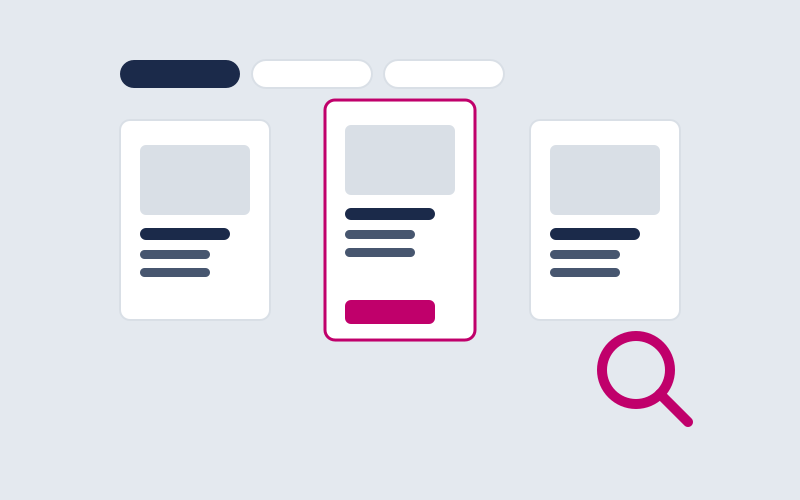
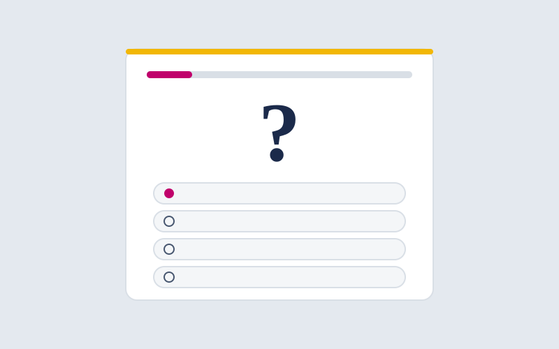
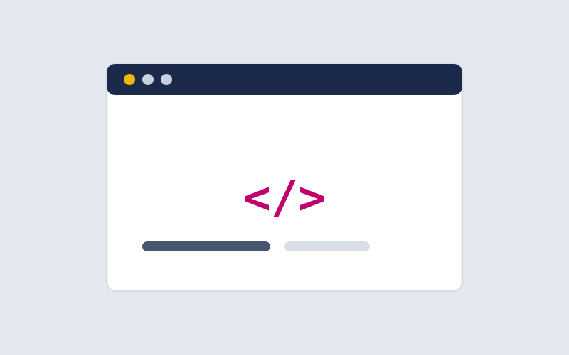
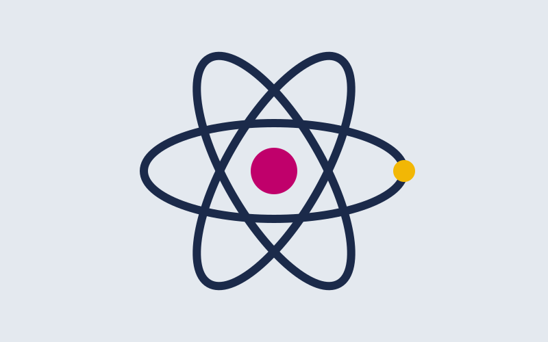
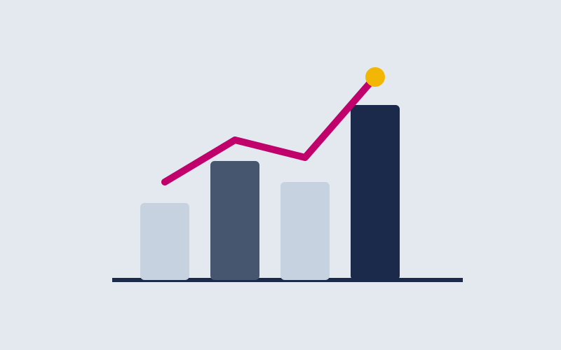
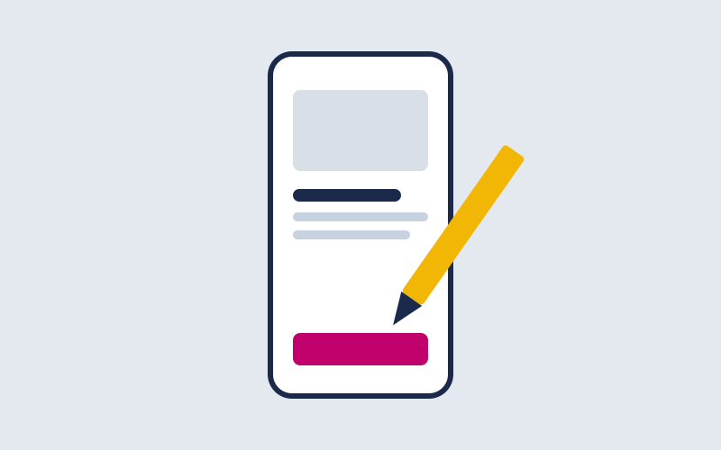
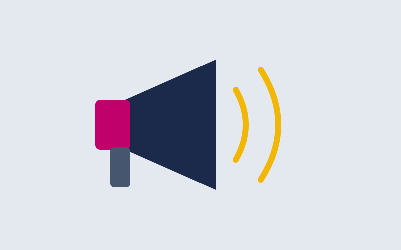

Explorador interactivo de cursos
Filtra por categoría, nivel y duración, compara cursos lado a lado y revisa una vista previa del temario antes de decidir.
Explorar cursosWayra Academy
Tu centro de aprendizaje
Cursos y talleres en vivo dictados por profesionales que trabajan hoy en lo que enseñan. Cada instructor pasa por una revisión de experiencia y de sus materiales antes de publicar.
Ver cursos disponiblesTres formas de conocer la plataforma antes de inscribirte.

Filtra por categoría, nivel y duración, compara cursos lado a lado y revisa una vista previa del temario antes de decidir.
Explorar cursosUna lección real y completa de un curso del catálogo. Se reproduce en el navegador, sin registro y sin tarjeta, para que compruebes cómo se enseña.
Ver clase gratis
Seis preguntas sobre tus intereses, tu tiempo disponible y tu objetivo. Al terminar recibes el curso o la ruta de capacitación que te conviene seguir.
Hacer el testLos cinco cursos del catálogo, uno a la vez. Usa los botones o las flechas del teclado.

Desarrollo web · Principiante · 28 horas
Construye interfaces accesibles desde cero, sin frameworks, con buenas prácticas de semántica.
Ver en el catálogo
Desarrollo web · Intermedio · 36 horas
Componentes, estado y consumo de APIs para construir interfaces dinámicas.
Ver en el catálogo
Datos e IA · Principiante · 20 horas
Limpieza, visualización e interpretación de datos con herramientas prácticas.
Ver en el catálogo
Diseño · Intermedio · 24 horas
Investigación, wireframes y prototipado centrado en accesibilidad.
Ver en el catálogo
Negocios digitales · Avanzado · 18 horas
Estrategia de contenido, publicidad y métricas para negocios en línea.
Ver en el catálogoCurso 1 de 5